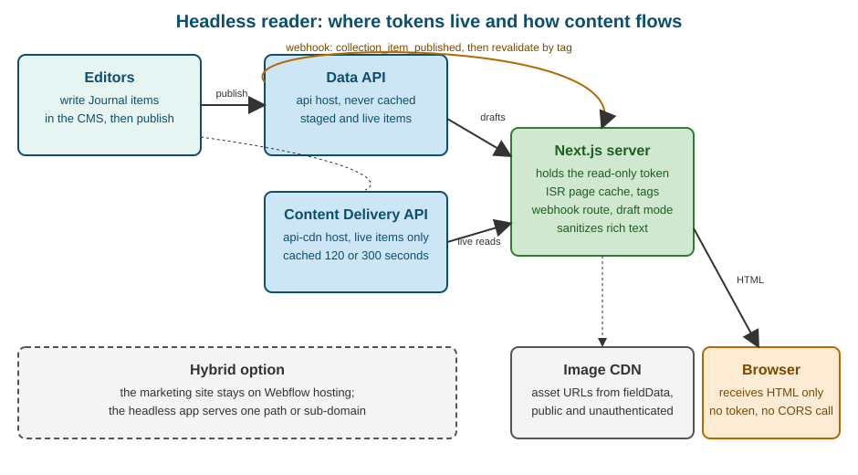

Content Delivery API and Headless
|
This content was generated with the assistance of AI and should be verified against the official documentation before being relied on in production. |
This page describes Webflow as it was on 2026-10-28, the date on which its facts were checked against the official Data API documentation. Webflow is a software-as-a-service product with no version numbers, so what follows is dated rather than versioned. The Content Delivery API is part of the Data API; the official pages do not state a separate plan requirement for it, and the only plan-based difference they describe is the length of the cache (shorter on Enterprise plans). Serving real traffic from a custom domain is a separate decision, described in Domains, Hosting and Publishing Options. Plans are named by tier only, never by price. All examples use a Developer workspace site and placeholder values you must replace.
Pinned versions, checked on 2026-10-28 on the package registries: the JavaScript SDK webflow-api 3.3.4, the Python SDK
webflow 2.0.0, Next.js 16.4.3 with React 19.3.1 and TypeScript 7.0.2 for the headless reader, and sanitize-html
2.18.1. Node.js 24 is used for the commands.
The running example is Fernbrook Gardens, the fictitious botanical garden with a Plants Collection, a Garden zones
Collection, an Events Collection and a Garden Journal Collection (described in
CMS Concepts and Content Modeling). The garden’s site is
published by Webflow, but its communications team also wants a separate reading application for the Journal: faster
pages, a design that Webflow’s template pages cannot express and the same Journal text reused in a mobile app and a
newsletter. All host names are placeholders under the reserved example names.
Two ways to read the same content
A Collection item can be read through two hosts. Both return the same JSON for the same request; they differ in freshness, in what they can reach and in what a request costs.
| Aspect | Data API (api.webflow.com) |
Content Delivery API (api-cdn.webflow.com) |
|---|---|---|
Freshness |
Always the latest data from Webflow’s backend |
Served from a cache; may lag the CMS by up to the cache time |
Reachable data |
Everything the token’s scopes allow: staged items, drafts, writes, every other resource |
Only two read-only endpoints for published (live) items |
Rate limit |
Every request counts against the plan’s limit |
Cache hits do not count; only requests that reach the origin do |
Intended for |
Management, synchronization, previews, anything that writes |
High-volume, multi-channel reads: websites, apps, email |
Authentication |
Site tokens and OAuth access tokens |
The same site tokens and OAuth access tokens |
The Data API’s documentation for listing live items itself points to the Content Delivery API for real-time application reads, because it is optimized for high-volume reads. Everything else in the Data API stays on the original host, so a program normally uses both: the cached host for what visitors read and the uncached host for what editors preview or scripts change. The write side is covered in Data API: CMS.
What the Content Delivery API is
The Content Delivery API serves published CMS content from a cache so that high-volume traffic does not hit
Webflow’s backend. The change a developer makes is one word of configuration: replace the host api.webflow.com by
api-cdn.webflow.com. Paths, query parameters, authentication headers and response bodies stay the same.
The cached endpoints are read-only and cover live items only:
-
List live collection items, which returns the published items of a Collection, with the usual
offset,limit(up to 100),slug,name,cmsLocaleId, sort and filter parameters. -
Get a live collection item, which returns one published item.
Everything else on api-cdn.webflow.com is not part of the contract: listing Collections, reading staged items, pages,
forms, assets and every write belong to the Data API host. A request for a staged item sent to the cached host is the
wrong tool, because the cache holds only the published version.
The first request, the cache and the header
Responses match the equivalent Data API responses with one addition: the cf-cache-status response header, which says
where the answer came from.
cf-cache-status |
Meaning |
|---|---|
|
Served from the CDN cache; the request did not reach Webflow’s backend |
|
Not in the cache; served from the origin, then cached for the next identical request |
|
Served from the origin without using the cache |
The caching policy, as the official page states it:
-
The first request for a given query goes to the Data API. The response is then cached, and identical later requests are served from the cache. The cache key is the whole request, so
limit=100&offset=0andlimit=100&offset=100are two entries, and so are two slug lookups. -
The time to live is 120 seconds on Enterprise plans and 300 seconds on the other plans. After that the entry is purged and the next request goes to the origin.
-
Changes to published items, including updates and deletions, may take up to the cache duration to appear, so users may see the previous version until the cache refreshes.
Two consequences matter in practice. First, a publish does not purge this cache: an editor who fixes a typo in the Journal and publishes will see the fix on the Webflow-hosted site at once, but a reader that goes through the cached host can show the old text for up to five minutes. Second, a deletion or unpublish has the same lag, so an item that was withdrawn for a legal reason can remain readable through this host for the length of the TTL. Applications that cannot tolerate that window read the live item from the Data API host when they regenerate a page, which is the approach taken in the Next.js reader below.
Rate limits and what the cache saves
Cache hits do not count against the plan’s rate limits, so cached reads are effectively unlimited. Requests that reach
the origin do count, and exceeding the limit returns 429 Too Many Requests. The plan-specific numbers are on the
rate-limits reference page, which is also where the X-RateLimit-Remaining header is documented; the headers and the
backoff pattern are the subject of
Data API: SDKs, Limits and Errors. The official guidance for the
Content Delivery API is to retry 429 responses with exponential backoff and to stagger the initial uncached requests,
because a cold cache sends every distinct query to the origin at once. A build that fetches forty pages of items in
parallel the first time is the typical cause.
The saving is therefore proportional to the repetition of requests, not to their number. A Journal list page requested
a million times with the same query costs one origin request every five minutes. A search page that sends a different
name filter per visitor defeats the cache and is billed against the rate limit like any Data API call.
Calling it
The raw HTTP request is the Data API request with a new host.
curl -G https://api-cdn.webflow.com/v2/collections/REPLACE_WITH_COLLECTION_ID/items/live \
-H "Authorization: Bearer $WEBFLOW_CDN_TOKEN" \
-H "Accept: application/json" \
-d offset=0 \
-d limit=100 \
-D - -o /dev/nullSource: Data API: Content delivery
The options -D - -o /dev/null print only the response headers. Run the command twice; the second answer carries
cf-cache-status: HIT as long as the first was less than 120 or 300 seconds earlier.
The JavaScript SDK
The SDK takes the host from the baseUrl option of WebflowClient. A program that needs both hosts creates two clients,
one per token, so that a read-only token can never be used for a write by accident.
{
"name": "fernbrook-delivery",
"private": true,
"type": "module",
"dependencies": {
"webflow-api": "3.3.4"
},
"devDependencies": {
"tsx": "4.21.0",
"typescript": "7.0.2"
}
}Source: npm: webflow-api
import { WebflowClient } from "webflow-api";
const collectionId = process.env.WEBFLOW_JOURNAL_COLLECTION_ID ?? "REPLACE_WITH_COLLECTION_ID";
// Reads of published items: cached host, CMS read-only token for this channel.
const delivery = new WebflowClient({
accessToken: process.env.WEBFLOW_CDN_TOKEN ?? "",
baseUrl: "https://api-cdn.webflow.com",
});
const page = await delivery.collections.items.listItemsLive(collectionId, { limit: 100, offset: 0 });
for (const item of page.items ?? []) {
console.log(item.fieldData?.slug, item.lastPublished);
}
console.log("total:", page.pagination?.total);Source: Data API: Content delivery
The method is listItemsLive. The official example names its client webflowCDN and calls the staged-items method
listItems; copied as written, that call reads the staged items, which the cached host does not serve as a cache, so
a delivery reader should call the live method explicitly. The same applies to the Python SDK.
The Python SDK
The Python SDK models the two hosts as a WebflowEnvironment with a base URL and one URL for each API.
webflow==2.0.0Source: PyPI: webflow
import os
from webflow import Webflow
from webflow.environment import WebflowEnvironment
environment = WebflowEnvironment(
base="https://api-cdn.webflow.com/v2",
content_delivery_api="https://api-cdn.webflow.com/v2",
data_api="https://api.webflow.com/v2",
)
client = Webflow(access_token=os.environ["WEBFLOW_CDN_TOKEN"], environment=environment)
page = client.collections.items.list_items_live(
collection_id=os.environ["WEBFLOW_JOURNAL_COLLECTION_ID"],
limit=100,
offset=0,
)
for item in page.items or []:
print(item.field_data.get("slug") if item.field_data else None, item.last_published)Source: Data API: Content delivery
Tokens for a delivery channel
Webflow recommends a separate token for each delivery channel, with CMS read-only permissions. The reasoning is operational: a token is the unit of revocation. If the newsletter tool leaks its token, revoking it leaves the website and the mobile app untouched. A token also identifies traffic, so the origin requests of one channel can be told from another in an incident.
For Fernbrook Gardens the garden creates one site token per consumer, each with only the cms:read scope (the
authorization scope reported as CMS:read in the endpoint reference):
| Channel | Token name in the site’s API settings | Holder |
|---|---|---|
Journal website |
|
The Next.js server’s environment, never its client bundle |
Mobile app backend |
|
The app’s backend-for-frontend, never the app binary |
Newsletter |
|
The mailing tool’s server-side connector |
Preview |
|
The Next.js server only; read-only too, but used on the uncached host for staged items |
Site tokens are created in the site’s settings under Apps & integrations by an Administrator or a user who may manage the site, and OAuth access tokens come from an installed Data Client app; both flows, the full scope list and token introspection are described in Data API: Authentication and Scopes. Four rules apply to a delivery token.
-
Least privilege. A read channel needs
cms:readand nothing else. The Data API rejects a write attempted with it. A token withcms:writein a reading application is the most common avoidable incident. -
Server-side only. A token placed in browser JavaScript, a mobile binary or a public repository is public. Even a read-only token lets anyone enumerate the site’s published items and burn the plan’s rate limit through the origin by varying the query.
-
Environment variables, not code. Keep tokens in the host’s secret store; locally, in an untracked
.env.localfile. Rotate by creating the new token, deploying it and then revoking the old one. -
One site per token. A site token is valid for one site, which limits the damage; a workspace-level token or an OAuth app reaches more sites and deserves tighter handling.
A headless reader of the Garden Journal
Headless means the CMS stores and serves content while another program renders it. Webflow is then used for what it is
best at, the editing experience, the Collections and the validation of fields, while the pages are produced by a
framework of the team’s choice. Next.js fits well, because its incremental static regeneration serves each page as a
cached file and rebuilds only the pages whose content changed, which matches a CMS that publishes content in small
units. The ISR model, the cache tags and revalidateTag are described in
Incremental Static Regeneration, and the data-fetching and
caching layers in Data Fetching and Caching.

The flow in the figure has four steps. An editor publishes a Journal item. The Data API sends a
collection_item_published webhook to a route in the Next.js app. The route verifies the signature and marks the pages
that depend on that item as stale by tag. The next visitor receives the old page immediately while Next.js regenerates it
in the background by reading the live item again.
The Journal collection
The reader assumes the Garden Journal Collection has these fields, which are the fields of the collection built earlier in this sub-section.
| Field | Type | Value in the API’s fieldData |
|---|---|---|
Name |
Plain text |
|
Slug |
Plain text |
|
Summary |
Plain text |
|
Body |
Rich text |
|
Cover photo |
Image |
|
Published on |
Date/time |
|
Field slugs in fieldData are the slugs shown in the Collection settings, which are lower case with hyphens, so a
field named Cover photo is read as cover-photo. Check them in the Collection settings or with the Data API’s
Collection details endpoint instead of assuming; a field whose slug differs from the one in the code is returned
as absent and produces a page without a cover.
Project setup
{
"name": "fernbrook-journal",
"private": true,
"scripts": {
"dev": "next dev",
"build": "next build",
"start": "next start"
},
"dependencies": {
"next": "16.4.3",
"react": "19.3.1",
"react-dom": "19.3.1",
"sanitize-html": "2.18.1"
},
"devDependencies": {
"@types/node": "24.0.0",
"@types/react": "19.3.0",
"@types/sanitize-html": "2.16.0",
"typescript": "7.0.2"
}
}Source: Next.js: Installation
The environment file keeps every secret on the server. None of these names starts with NEXT_PUBLIC_, the prefix that
makes Next.js copy a value into the browser bundle.
# .env.local (never committed)
WEBFLOW_COLLECTION_ID=REPLACE_WITH_COLLECTION_ID
WEBFLOW_CDN_TOKEN=REPLACE_WITH_READ_ONLY_TOKEN
WEBFLOW_PREVIEW_TOKEN=REPLACE_WITH_PREVIEW_TOKEN
WEBFLOW_WEBHOOK_SECRET=REPLACE_WITH_WEBHOOK_SECRET
PREVIEW_SECRET=REPLACE_WITH_RANDOM_STRINGSource: Next.js: Environment variables
The data layer
All access to Webflow goes through one module. It uses the plain fetch function instead of the SDK because Next.js
extends fetch with cache tags and revalidation times, and those options are what connect a Webflow item to a cached
page.
The module makes two decisions that follow from the cache behavior above. Lists are read from the cached host, because a list page is requested often and a delay of a few minutes in a list is acceptable. A single article is read from the Data API host when Next.js regenerates it, because regeneration happens once per page and per change, so the cost is small, and because it guarantees that the page rebuilt after a webhook contains the new text rather than the cached old one.
// lib/webflow.ts
import "server-only";
const CDN_HOST = "https://api-cdn.webflow.com/v2";
const DATA_HOST = "https://api.webflow.com/v2";
export interface WebflowImage {
fileId?: string;
url: string;
alt?: string | null;
}
export interface JournalFields {
name: string;
slug: string;
summary?: string;
body?: string;
"cover-photo"?: WebflowImage;
"published-on"?: string;
}
export interface JournalItem {
id: string;
lastPublished: string | null;
lastUpdated: string;
isDraft: boolean;
isArchived: boolean;
fieldData: JournalFields;
}
interface ItemsResponse {
items: JournalItem[];
pagination: { limit: number; offset: number; total?: number };
}
function required(name: string): string {
const value = process.env[name];
if (!value) throw new Error(`Missing environment variable ${name}`);
return value;
}
async function webflowFetch<T>(
host: string,
path: string,
token: string,
next: { revalidate?: number | false; tags?: string[] },
): Promise<T> {
const response = await fetch(`${host}${path}`, {
headers: { Authorization: `Bearer ${token}`, Accept: "application/json" },
next,
});
if (response.status === 429) {
const wait = response.headers.get("retry-after") ?? "unknown";
throw new Error(`Webflow rate limit reached; retry after ${wait} seconds`);
}
if (!response.ok) {
throw new Error(`Webflow ${response.status} for ${path}`);
}
return (await response.json()) as T;
}
/** Published Journal items, newest first, from the cached host. */
export async function listJournal(): Promise<JournalItem[]> {
const collection = required("WEBFLOW_COLLECTION_ID");
const query = new URLSearchParams({ limit: "100", sortBy: "lastPublished", sortOrder: "desc" });
const data = await webflowFetch<ItemsResponse>(
CDN_HOST,
`/collections/${collection}/items/live?${query}`,
required("WEBFLOW_CDN_TOKEN"),
{ revalidate: 300, tags: ["journal"] },
);
return data.items;
}
/** One published article by slug, read from the uncached host when the page is regenerated. */
export async function getJournalPost(slug: string): Promise<JournalItem | null> {
const collection = required("WEBFLOW_COLLECTION_ID");
const query = new URLSearchParams({ slug, limit: "1" });
const data = await webflowFetch<ItemsResponse>(
DATA_HOST,
`/collections/${collection}/items/live?${query}`,
required("WEBFLOW_CDN_TOKEN"),
{ tags: ["journal", `journal:${slug}`] },
);
return data.items[0] ?? null;
}
/** The staged version of an article, drafts included, for previews. Never cached. */
export async function getJournalDraft(slug: string): Promise<JournalItem | null> {
const collection = required("WEBFLOW_COLLECTION_ID");
const query = new URLSearchParams({ slug, limit: "1" });
const data = await webflowFetch<ItemsResponse>(
DATA_HOST,
`/collections/${collection}/items?${query}`,
required("WEBFLOW_PREVIEW_TOKEN"),
{ revalidate: 0 },
);
return data.items[0] ?? null;
}The server-only import is a build-time guard: if any client component imports this module, the build fails
instead of shipping the token. The staged call uses the path without /live, the Data API’s list staged items
endpoint, on the uncached host. Each helper returns the first item for a slug filter, which the endpoint accepts as an
exact match.
Two details deserve attention. The limit is capped at 100; a Journal with more than a hundred posts needs the
offset loop shown in Data API: CMS, or a dedicated archive page per year with a
filter. And the list endpoint also supports filter[...] and sort[...] parameters, with at most 10 filter terms and
2 text-search terms per request, and at most 3 sort fields. Beyond those limits, read the items and filter them in the
application.
Rich text and the image host
The body field is a string of HTML produced by Webflow’s rich text editor: headings, paragraphs, lists, links,
figures and embedded images. It is trusted content in the sense that only the site’s editors write it, but a headless
reader should still treat it as untrusted input, because a collaborator’s account, a CSV import or an API client with
cms:write can put anything into it, and the reader renders it with dangerouslySetInnerHTML, which executes whatever
markup it receives. A sanitizer with an allow-list closes that route.
// lib/rich-text.ts
import "server-only";
import sanitizeHtml from "sanitize-html";
export function cleanRichText(html: string | undefined): string {
return sanitizeHtml(html ?? "", {
allowedTags: [
"h2", "h3", "h4", "p", "a", "ul", "ol", "li", "strong", "em", "blockquote",
"figure", "figcaption", "img", "br", "hr", "code", "pre",
],
allowedAttributes: {
a: ["href", "title", "rel"],
img: ["src", "alt", "width", "height", "loading"],
},
allowedSchemes: ["https", "mailto"],
transformTags: {
a: sanitizeHtml.simpleTransform("a", { rel: "noopener noreferrer" }),
},
});
}Source: npm: sanitize-html
Image fields are objects: the url points to Webflow’s asset CDN, alt carries the alternative text typed in the
Collection item, and fileId identifies the asset in the Assets API. Webflow publishes the originals together with
generated responsive variants on its own sites, but the API returns the original URL, and next/image creates the
variants a headless site needs. Next.js refuses remote hosts that are not declared, so the asset host seen in your
responses must be allowed explicitly. The host appearing in current responses is cdn.prod.website-files.com; inspect a
real response and allow exactly the host you see.
// next.config.ts
import type { NextConfig } from "next";
const config: NextConfig = {
images: {
remotePatterns: [
{ protocol: "https", hostname: "cdn.prod.website-files.com", pathname: "/**" },
],
},
};
export default config;Source: Next.js: Image remotePatterns
The image value has no width and height, so the layout reserves the space with a CSS aspect ratio and fill, which
avoids layout shift. An empty alt in the CMS is a decision for the editor, because it declares the image decorative;
the component below passes the value through and never invents a description.
The pages
The list page is a server component. Its data comes from the cached host, and the page itself is revalidated by tag or by time.
// app/journal/page.tsx
import Image from "next/image";
import Link from "next/link";
import { listJournal } from "@/lib/webflow";
export const metadata = { title: "Garden Journal | Fernbrook Gardens" };
export default async function JournalIndex() {
const posts = await listJournal();
return (
<main>
<h1>Garden Journal</h1>
<ul className="posts">
{posts.map((post) => {
const cover = post.fieldData["cover-photo"];
return (
<li key={post.id}>
{cover && (
<div style={{ position: "relative", aspectRatio: "3 / 2" }}>
<Image src={cover.url} alt={cover.alt ?? ""} fill sizes="(min-width: 800px) 400px, 100vw" />
</div>
)}
<h2>
<Link href={`/journal/${post.fieldData.slug}`}>{post.fieldData.name}</Link>
</h2>
<p>{post.fieldData.summary}</p>
</li>
);
})}
</ul>
</main>
);
}Source: Next.js: Fetching data
The article page prebuilds the existing posts at build time and renders new ones on demand. Since Next.js 15 the params
object is a promise, which the code awaits.
// app/journal/[slug]/page.tsx
import { draftMode } from "next/headers";
import Image from "next/image";
import { notFound } from "next/navigation";
import { cleanRichText } from "@/lib/rich-text";
import { getJournalDraft, getJournalPost, listJournal } from "@/lib/webflow";
export const dynamicParams = true;
export async function generateStaticParams() {
const posts = await listJournal();
return posts.map((post) => ({ slug: post.fieldData.slug }));
}
export async function generateMetadata({ params }: { params: Promise<{ slug: string }> }) {
const { slug } = await params;
const post = await getJournalPost(slug);
return { title: post ? `${post.fieldData.name} | Fernbrook Gardens` : "Not found" };
}
export default async function JournalPost({ params }: { params: Promise<{ slug: string }> }) {
const { slug } = await params;
const { isEnabled } = await draftMode();
const post = isEnabled ? await getJournalDraft(slug) : await getJournalPost(slug);
if (!post) notFound();
const cover = post.fieldData["cover-photo"];
return (
<article>
{isEnabled && <p role="status">Preview: this version may not be published yet.</p>}
<h1>{post.fieldData.name}</h1>
<time dateTime={post.fieldData["published-on"]}>{post.fieldData["published-on"]?.slice(0, 10)}</time>
{cover && (
<div style={{ position: "relative", aspectRatio: "3 / 2" }}>
<Image src={cover.url} alt={cover.alt ?? ""} fill priority sizes="(min-width: 800px) 800px, 100vw" />
</div>
)}
<div dangerouslySetInnerHTML={{ __html: cleanRichText(post.fieldData.body) }} />
</article>
);
}Source: Next.js: generateStaticParams
An unknown slug returns null from the helper, notFound() produces the 404 page, and a slug that exists only as a
draft or an archived item is also a 404 for public visitors, because the live endpoint does not return it.
Keeping the reader fresh with a webhook
Webflow publishes; the reader should react, not poll. The Data API sends a collection_item_published webhook when an
item is published, and collection_item_unpublished and collection_item_deleted when one is withdrawn. The payload of
the published event carries triggerType and a payload object with the item’s id, siteId, collectionId,
cmsLocaleId, lastPublished, lastUpdated, createdOn, isArchived, isDraft and fieldData, of which name
and slug are always present. The slug is all the route needs to find the cached page.
The delivery rules, the creation of webhooks through the API, the 75-webhooks-per-trigger-type limit and the receivers in
Node and Python are the subject of Webhooks. The route below is the Journal’s receiver.
It follows the documented signature scheme: the x-webflow-signature header is a SHA-256 HMAC, in hexadecimal, of the
string made of the x-webflow-timestamp header, a colon and the raw body, and a request older than five minutes is
rejected. For a webhook created through the API with a site token, the signing key is that webhook’s own secretKey,
returned in the creation response; for an OAuth app it is the app’s client secret. A webhook created in the dashboard has
no signature headers, so it cannot be verified and should not drive revalidation of a public site.
// app/api/webflow/revalidate/route.ts
import { createHmac, timingSafeEqual } from "node:crypto";
import { revalidateTag } from "next/cache";
import { NextResponse } from "next/server";
const MAX_AGE_MS = 5 * 60 * 1000;
function validSignature(timestamp: string, body: string, signature: string, secret: string): boolean {
const expected = createHmac("sha256", secret).update(`${timestamp}:${body}`).digest("hex");
const a = Buffer.from(expected);
const b = Buffer.from(signature);
return a.length === b.length && timingSafeEqual(a, b);
}
function freshEnough(timestamp: string): boolean {
const sent = Number(timestamp);
if (!Number.isFinite(sent)) return false;
// Accept both seconds and milliseconds since the epoch.
const sentMs = sent < 1e12 ? sent * 1000 : sent;
return Math.abs(Date.now() - sentMs) <= MAX_AGE_MS;
}
export async function POST(request: Request) {
const body = await request.text(); // raw body: the signature covers these exact bytes
const timestamp = request.headers.get("x-webflow-timestamp") ?? "";
const signature = request.headers.get("x-webflow-signature") ?? "";
const secret = process.env.WEBFLOW_WEBHOOK_SECRET ?? "";
if (!secret || !validSignature(timestamp, body, signature, secret) || !freshEnough(timestamp)) {
return NextResponse.json({ ok: false }, { status: 401 });
}
const event = JSON.parse(body) as {
triggerType?: string;
payload?: { fieldData?: { slug?: string } };
};
const slug = event.payload?.fieldData?.slug;
revalidateTag("journal", "max"); // the list page
if (slug) revalidateTag(`journal:${slug}`, "max"); // the article
return NextResponse.json({ ok: true, trigger: event.triggerType, slug });
}Source: Data API: Working with webhooks
Several details make this receiver correct rather than merely working.
-
It reads the body once, as text. Parsing JSON first and re-serializing it changes whitespace and key order, and the signature no longer matches.
-
It compares in constant time and checks the lengths first, because
timingSafeEqualthrows on buffers of different length. -
It accepts the timestamp in seconds or milliseconds. The documentation describes the header as Unix epoch time while its examples compare it in milliseconds, so the code normalizes both rather than guessing.
-
It answers 200 quickly. Webflow treats any non-200 answer, a redirect, a certificate failure or a timeout as a failure, retries up to three more times ten minutes apart, and deactivates the webhook after repeated failures; reactivation then requires contacting Webflow support. The route does only cheap work, since
revalidateTagwith themaxprofile marks entries stale and returns, leaving the regeneration to the next request. -
It is idempotent. Revalidating twice for a duplicate delivery is harmless.
The tag has a second purpose. getJournalPost reads from the uncached host, so when the page behind
journal:fernbrook-roses-in-bloom regenerates after the webhook, the text it renders is the text just published, not the
five-minute-old entry in the Content Delivery API cache. The list page, which reads from the cached host, can show the
previous list for up to the TTL; if that is not acceptable for the list either, move listJournal to the Data API host
too. That is a trade of rate-limit budget for freshness, and a per-site decision.
Register the webhook once, with a site token that has the sites:write scope (the endpoint needs write access to the
site’s webhooks). The secret key appears in the response only for this kind of token.
curl -X POST "https://api.webflow.com/v2/sites/REPLACE_WITH_SITE_ID/webhooks" \
-H "Authorization: Bearer $WEBFLOW_API_TOKEN" \
-H "Content-Type: application/json" \
-d '{
"triggerType": "collection_item_published",
"url": "https://journal.fernbrook-gardens.example/api/webflow/revalidate"
}'Source: Data API: Create webhook
Repeat the call for collection_item_unpublished and collection_item_deleted, so that a withdrawn article disappears
without waiting for the time-based revalidation. Store each returned secretKey in the host’s secret store;
because the receiver above uses a single WEBFLOW_WEBHOOK_SECRET, a project that registers three webhooks either keeps a
map from trigger type to key or registers all three before choosing the one that will be checked.
Previewing drafts
Editors need to see an unpublished article in the real design before they publish it. The Content Delivery API cannot
help, because it holds only published items; the preview must read staged items from the Data API host, which is why
getJournalDraft exists and uses its own token. The staged list endpoint returns drafts as well as published items; each
item carries isDraft and isArchived, so the preview can show the state.
Next.js provides Draft Mode for exactly this: a cookie that makes a route skip the static cache and render on demand. The route that turns it on must be protected, otherwise anyone who guesses the URL sees unpublished content.
// app/api/preview/route.ts
import { timingSafeEqual } from "node:crypto";
import { draftMode } from "next/headers";
import { redirect } from "next/navigation";
export async function GET(request: Request) {
const { searchParams } = new URL(request.url);
const given = Buffer.from(searchParams.get("secret") ?? "");
const expected = Buffer.from(process.env.PREVIEW_SECRET ?? "");
const slug = searchParams.get("slug") ?? "";
if (given.length === 0 || given.length !== expected.length || !timingSafeEqual(given, expected)) {
return new Response("Invalid token", { status: 401 });
}
if (!/^[a-z0-9-]+$/.test(slug)) {
return new Response("Invalid slug", { status: 400 });
}
(await draftMode()).enable();
redirect(`/journal/${slug}`);
}Source: Next.js: Draft Mode
The editor opens https://journal.fernbrook-gardens.example/api/preview?secret=...&slug=fernbrook-roses-in-bloom, usually
from a bookmark or a link in the editorial checklist, and sees the staged text with the preview banner. The route
validates the slug against a strict pattern before redirecting, so it cannot be turned into an open redirect, and it
compares the secret in constant time. The link can live in an internal page or in the editors' checklist. The preview secret is a second reason to keep the preview token and the delivery token apart: a leaked
preview URL exposes drafts, a leaked delivery token exposes only what is already public.
Why tokens never go to the browser
It is tempting to skip the Next.js server and call Webflow from the visitor’s browser: a fetch in a client component, no
backend to run. Two separate obstacles stand in the way, and neither is a bug to work around.
The token would be public. Anything the browser can send, the user can read in the network panel and reuse. A read-only token is less dangerous than a write token, but it still lets anyone read every published item, enumerate Collections the token can reach, and send unlimited distinct queries that miss the cache and are charged against the plan’s rate limit. Revoking it then breaks every visitor at once, and so do rotations.
CORS is a browser rule, not a security feature of Webflow’s API. The same-origin policy blocks a page on
journal.fernbrook-gardens.example from reading a response from api-cdn.webflow.com unless the API answers with the
right Access-Control-Allow-* headers. Whether an API allows browser origins is the API’s decision, not the page’s;
the official Content Delivery API documentation describes server and application use, with a bearer token in the
Authorization header, which also forces a CORS preflight request in a browser. Do not design around a hoped-for
allowance. Even if a browser call worked, it would still carry the token, which is the first problem. The mechanism and
the correct way to configure it in your own backend are explained in
What is CORS?.
The robust pattern is a backend-for-frontend: the browser calls your own origin (a Next.js route handler or server component), and your server calls Webflow with the token. The route handler for client-side features, such as a "load more" button, looks like this:
// app/api/journal/route.ts
import { NextResponse } from "next/server";
export async function GET(request: Request) {
const offset = Math.max(0, Number(new URL(request.url).searchParams.get("offset") ?? "0") || 0);
const url = new URL(
`https://api-cdn.webflow.com/v2/collections/${process.env.WEBFLOW_COLLECTION_ID}/items/live`,
);
url.searchParams.set("limit", "12");
url.searchParams.set("offset", String(offset));
const upstream = await fetch(url, {
headers: { Authorization: `Bearer ${process.env.WEBFLOW_CDN_TOKEN}` },
next: { revalidate: 300, tags: ["journal"] },
});
if (!upstream.ok) return NextResponse.json({ error: "upstream" }, { status: 502 });
const data = await upstream.json();
return NextResponse.json(
{ items: data.items.map((i: { id: string; fieldData: Record<string, unknown> }) => ({ id: i.id, ...i.fieldData })) },
{ headers: { "Cache-Control": "public, s-maxage=300, stale-while-revalidate=600" } },
);
}Source: Next.js: Route Handlers
The handler clamps offset to a non-negative integer, fixes limit instead of passing the visitor’s value through,
projects only the fields the front end needs, and tells shared caches how long they may keep the answer. These four
choices turn the route from an open proxy into a narrow, cheap endpoint. Route handlers and their security are covered in
Route Handlers and Backend for Frontend.
The hybrid pattern: a Webflow site plus a headless app
A full rewrite is rarely the goal. The usual shape is hybrid: Webflow keeps the pages it is good at (home page, landing pages, the Plants catalogue with its Collection template pages, forms and e-commerce), and a headless application serves the part that needs behavior Webflow cannot give: an interactive garden map, a members area, a Journal with search and personalized recommendations. Both read the same Collections.
| Option | How it is arranged | Consequences |
|---|---|---|
Separate sub-domain |
|
Simplest. Two origins, so cookies and analytics are separate. Search engines treat the sub-domain as its own site |
Path on the main domain |
A reverse proxy sends |
One origin and one SEO authority, at the price of operating the proxy; see Reverse Proxy and Custom Hosting |
Webflow Cloud |
The app runs on Webflow Cloud, mounted on a path of the Webflow site |
One vendor and one deployment flow; see Webflow Cloud and Hybrid Apps |
Embedded component |
A code component or a Designer-side script loads a small widget from your server |
The page stays in Webflow; the widget reads through your server route, never with a token in the page; see Code Components |
A few rules keep a hybrid site coherent.
-
One source of truth for content. Editors write the Journal once, in Webflow; the headless app only reads. Do not mirror items into a second database unless you need queries the API cannot answer, because a mirror needs its own synchronization and its own failure handling (see Data API: CMS).
-
Shared design tokens. The headless app should reuse the colors, type scale and spacing of the Webflow site, either by copying the values of the site’s variables (see Variables and Modes) or by exporting code with DevLink (see DevLink Export). Otherwise the two halves drift apart.
-
Shared navigation. Keep the header and footer in one place and render them in both, or at least generate the headless app’s navigation from the same Collection or the site’s page list.
-
Canonical URLs and the sitemap. The Webflow sitemap lists only the pages Webflow hosts. If the headless app serves
/journal/, publish its own sitemap and make sure each article has one canonical URL; see SEO and AEO. -
Forms and e-commerce stay on Webflow unless you accept moving them: a Webflow form posts to Webflow and appears in the site’s submissions, which the app would have to replace (see Forms).
-
Localization. The cached endpoints accept
cmsLocaleId; a reader for Spanish and German content passes the locale ids from the site’s localization settings, as described in Localization.
A Spanish and German list
The reader above serves the primary locale. A locale-aware variant passes the locale id to the list call, one request per locale, and caches each separately:
// lib/webflow-locales.ts
import "server-only";
const LOCALES: Record<string, string> = {
es: process.env.WEBFLOW_LOCALE_ES ?? "REPLACE_WITH_SPANISH_CMS_LOCALE_ID",
de: process.env.WEBFLOW_LOCALE_DE ?? "REPLACE_WITH_GERMAN_CMS_LOCALE_ID",
};
export async function listJournalIn(locale: "es" | "de") {
const query = new URLSearchParams({ limit: "100", cmsLocaleId: LOCALES[locale] });
const response = await fetch(
`https://api-cdn.webflow.com/v2/collections/${process.env.WEBFLOW_COLLECTION_ID}/items/live?${query}`,
{
headers: { Authorization: `Bearer ${process.env.WEBFLOW_CDN_TOKEN}` },
next: { revalidate: 300, tags: ["journal", `journal:${locale}`] },
},
);
if (!response.ok) throw new Error(`Webflow ${response.status}`);
return (await response.json()).items as Array<{ id: string; fieldData: { name: string; slug: string } }>;
}The identifiers differ between the site’s locale list and the CMS (localeId against cmsLocaleId), a trap described in
Data API: E-commerce and Localization. Use the CMS locale id
here.
Pitfalls
| Symptom | Cause and remedy |
|---|---|
Edited text is unchanged for minutes |
The Content Delivery API cache lasts 120 or 300 seconds and a publish does not purge it. Read the page’s own item from the Data API host when it is regenerated, or accept the delay |
An unpublished item still appears |
The same TTL applies to unpublish and delete. Webhooks mark the Next.js cache stale, not the Webflow one |
|
Every request has a different query (a changing parameter, a cache-busting value) or the request is not a cacheable read. Keep parameters stable |
|
A cold cache sends every distinct query to the origin. Build in small batches, back off exponentially and stagger the first requests |
Preview shows the published version |
The preview read used the live endpoint or the cached host. Use the staged endpoint on the Data API host |
Images 400 in |
The asset host is not in |
Cover photo missing |
The code reads a field slug that differs from the Collection’s. Read the slug in the Collection settings |
Webhook receiver always answers 401 |
The body was parsed before the signature check, the wrong secret was used, or the webhook was created in the dashboard and sends no signature |
The webhook stops arriving |
Webflow deactivated it after repeated failures; fix the receiver and recreate it, or contact Webflow support |
Token visible in the browser’s network panel |
A client component fetched Webflow directly or a variable begins with |
Corrections to older material
Older books and tutorials describe the CMS as something a developer reads only through the Data API, or through
webflow.io pages scraped with a script. The Content Delivery API is a later addition to the platform: it separates
cached public reads from the authoritative host and was introduced to answer high-volume traffic. The older
Collection API (v1) is gone, and tutorials that call api.webflow.com without the /v2 prefix or use the site-id
header of v1 are history, as listed in
Where Older Books and Tutorials Are Outdated. Advice
to put an API token in a browser script "because it is read-only" is the opposite of the current recommendation: use one
read-only token per channel, held by a server.